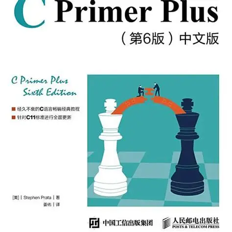
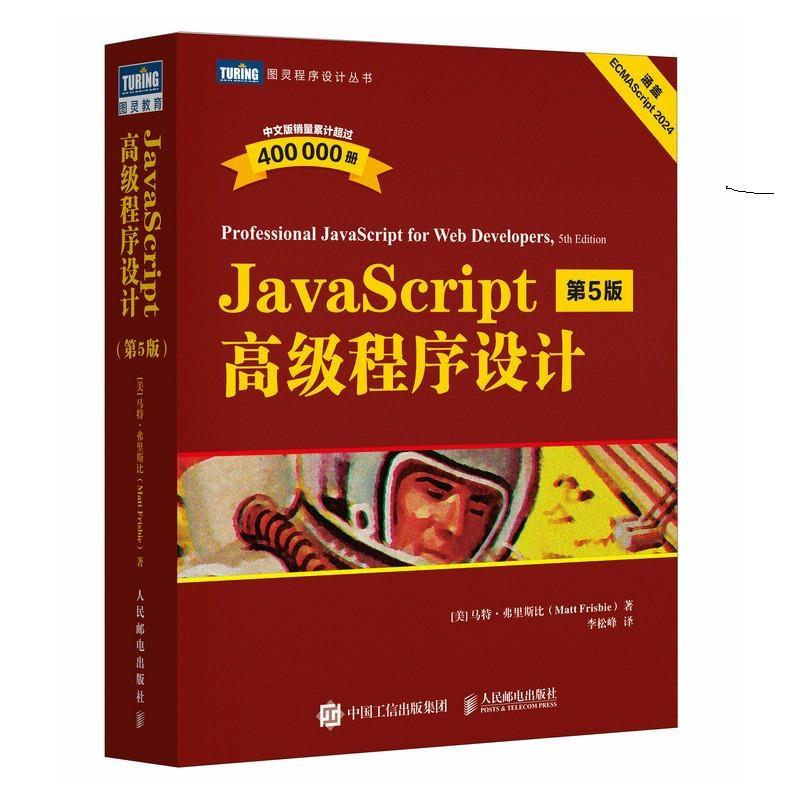

作者：Stephen Prata
这是一本经典的C语言入门书籍，适合初学者系统学习C语言基础知识。书中包含大量示例代码和练习题，帮助读者快速掌握编程技能。
作者：严蔚敏
数据结构经典教材，从顺序表到链表，从栈队列到二叉树，循序渐进地学习数据结构核心知识，配有详细代码实现。

作者：马特·弗里斯比
前端开发必读红宝书，全面介绍JavaScript语言核心、DOM操作、面向对象编程、异步编程等进阶内容。